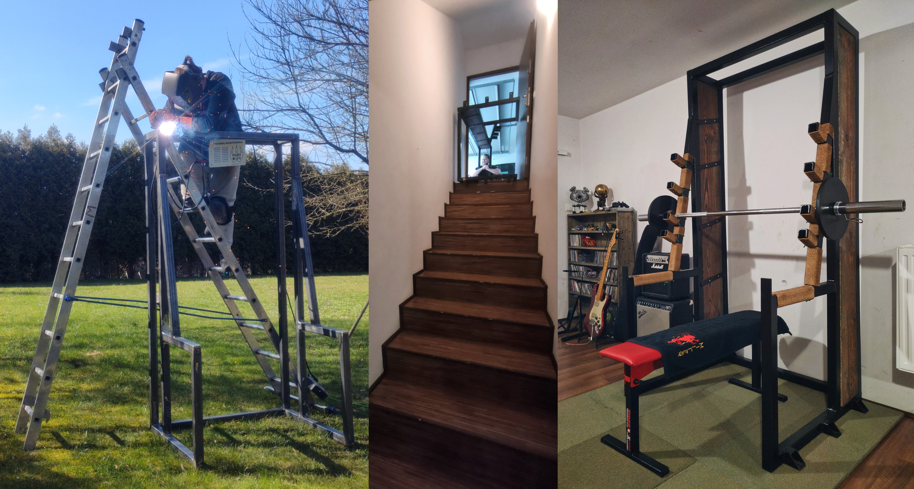

After setting a new record for squat and missing the re rack by 1cm my old setup has been efficiently converted to scrap metal. Out of necessity came the idea for welding my own rack. This time the rack was tiny bit stronger.
The new construction was made out of 50x50mm square steel tubing with wall thickness of 4mm. The sides were fitted with a wood panels from my old childhood bed. Whole rack weights somewhere between 120-140kg which made the transporting it downstairs quite the challange. Luckily it turned out I have to move 3 months after carrying it down.
Looks surprisingly light. It isn't